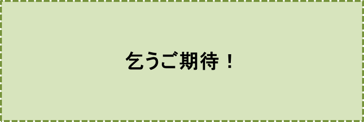

2センチの隙間-前記-
笠原正雄
前記
『思いっきり作り話』の第五作目『2センチの隙間』を皆さまに読んでいただきたいな、と思います。
……しかし、この作品を書くことに、私には大きな迷いがありました。それは
「このお話ひょっとすると、あなたの自伝ではないですか？ いや、多少自伝的なものでしょう」
というご指摘をお読み下さった皆さん方から寄せられるかもしれないなぁ、と考えたからです。
"自伝？そうですね……。うーん、そうかも知れません。" と答えるでしょう。
人生振り返ってみると"引きこもり"の時代が何度もあったな……と思います。何回かあったなと思います。
思いっきり作り話の形でこのことを語りたいと思います。
肩を凝らさずお楽しみいただければ、嬉しいです。
